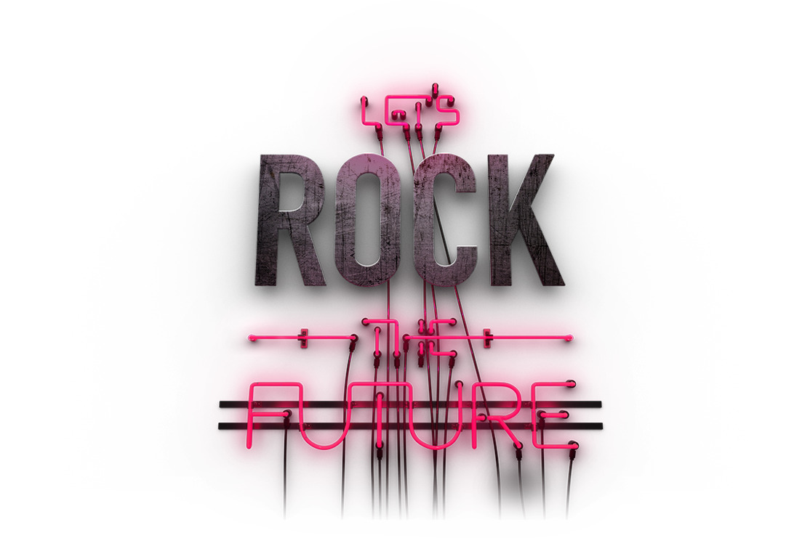

O futuro chegou e não há hoverboards nem carros voadores.
Apenas muitos problemas sem soluções.

A Fome
A fome afeta 830 milhões de pessoas no mundo. Ao ler este texto, você entenderá a urgência de enfrentar esse problema e se sentirá motivado a agir para garantir que todos tenham acesso a alimentos nutritivos. Juntos, podemos transformar essa realidade.
Insegurança Alimentar Mundial
A fome afeta 830 milhões de pessoas no mundo. Ao ler este texto, você entenderá a urgência de enfrentar esse problema e se sentirá motivado a agir para garantir que todos tenham acesso a alimentos nutritivos. Juntos, podemos transformar essa realidade.
Fome Zero e Agricultura Sustentável
A fome afeta 830 milhões de pessoas no mundo. Ao ler este texto, você entenderá a urgência de enfrentar esse problema e se sentirá motivado a agir para garantir que todos tenham acesso a alimentos nutritivos. Juntos, podemos transformar essa realidade.
As IAs Generativas no combate à fome
A fome afeta 830 milhões de pessoas no mundo. Ao ler este texto, você entenderá a urgência de enfrentar esse problema e se sentirá motivado a agir para garantir que todos tenham acesso a alimentos nutritivos. Juntos, podemos transformar essa realidade.